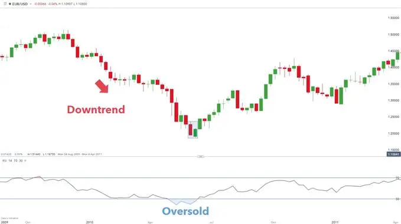

The piercing line pattern is seen as a bullish reversal candlestick pattern located at the bottom of a downtrend. It frequently prompts a reversal in trend as bulls enter the market and push prices higher.
The piercing pattern involves two candlesticks with the second bullish candlestick opening lower than the preceding bearish candle. This is followed by buyers driving prices up to close above 50% of the body of the bearish candle.
The image below highlights the intricacies of the two candlesticks making up the piercing pattern:
| HOW TO IDENTIFY A PIERCING PATTERN ON FOREX CHARTS? |
Characteristics of a piercing pattern:
What does this tell traders?
Advantages of trading with the bullish engulfing candle:
| TRADING WITH THE PIERCING LINE PATTERN: TOP TIPS & STRATEGIES |

The weekly EUR/USD chart above shows the presence of a piercing pattern highlighted in blue. Preceding this pattern is a strong downtrend as indicated by lower lows and lower highs. This example illustrates the use of price action to determine the downtrend, however, traders often prefer the use of a technical indicator such as the moving average for confirmation (price needs to be above the long-term moving average).
As mentioned previously, the piercing pattern does require further confirmation before entering into a long trade. In this example, the RSI oscillator has been used as additional confirmation of a reversal. From the chart, the RSI indicates an oversold signal which reinforces the validity of the piercing pattern.
Stop levels can be placed at the recent low (low of the bullish piercing pattern candle), while the take profit (limit) can be identified using Fibonacci extensions or price action.